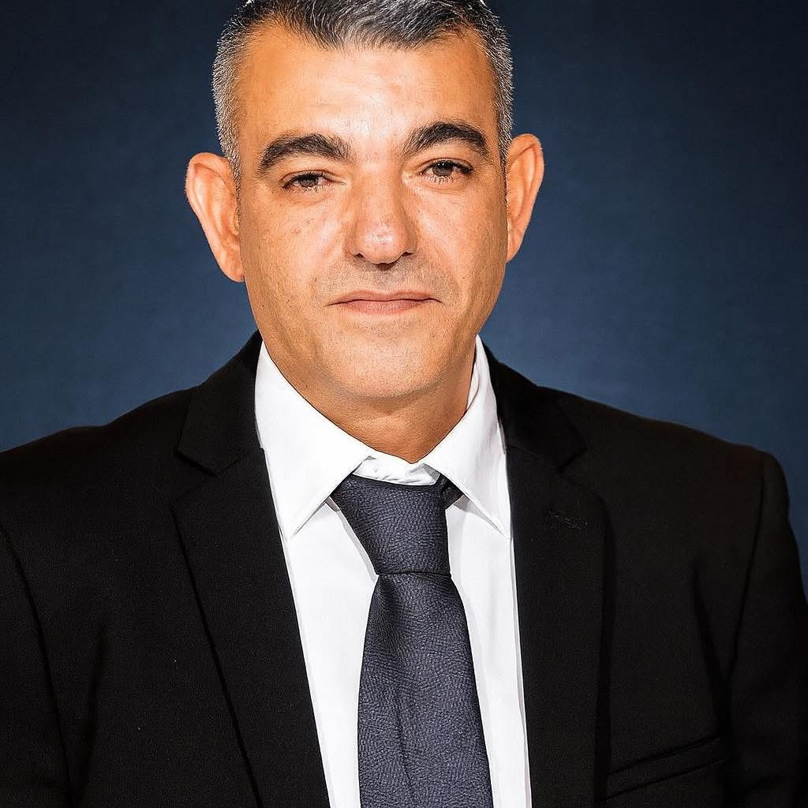

ייעוץ מיני בצור הדסה
ייעוץ מיני מקצועי ודיסקרטי — בקליניקה (15 דקות נסיעה) או אונליין.
תושבי צור הדסה — 15 דקות נסיעה דרך כביש 375. נסיעה קצרה, נופים מרהיבים, וליווי מקצועי בהמשך.
ייעוץ מיני בצור הדסה — שירות מקצועי ואישי
צור הדסה היא קהילה שאני אוהב לעבוד עמה. גישה שמבינה את עולם הערכים מבפנים — לא רק "מקבלת" אותו, אלא חיה אותו.
אם זה מוכר לכם — אתם לא לבד
סימנים שמזהים זוגות מצור הדסה שפנו אלינו
אם אחד או יותר מאלה מוכרים — זה הזמן להתחיל בתהליך. ככל שמחכים יותר, ככה זה הופך למסובך יותר.
למה להתחיל היום ולא בעוד חודש?
דחיינות היא האויב הכי גדול. כל שבוע שעובר — הדפוסים מתחזקים והפתרון נעשה יותר מורכב.
ייעוץ מיני וליווי בתפקוד מיני — מה כולל השירות
תחומי התמחות בצור הדסה ובאזור (בית שמש, ירושלים, מבשרת ציון)
💞 חרדת ביצוע אצל גברים
תהליך ספציפי לחזרה לתפקוד נינוח.
💞 ירידה בחשק המיני
גורמים מורכבים — פתרונות מותאמים.
💞 שונות בחשק בין בני זוג
איך מנהלים פערים בריאים.
💞 קושי בעירור או באורגזמה
הבנה ופתרונות לנשים וגברים.
💞 כאב במהלך יחסים
בירור פסיכו-פיזי, הפניה רפואית במידת הצורך.
💞 תקשורת מינית זוגית
לדבר על המין בלי בושה.
שיטות מקצועיות שאני משתמש בהן
ייעוץ מיני וליווי בתפקוד מיני מתבסס על 4 שיטות מובילות בעולם — כולן מבוססות-מחקר ובהסמכה אישית.
מודל מאסטרס וג'ונסון
גישה מבוססת-מחקר מ-60 שנות עבודה במיניות אנושית.
תרפיה התנהגותית-קוגניטיבית
שינוי דפוסי מחשבה והתנהגות סביב מיניות.
גישה רגשית-זוגית
מיניות במסגרת הקירבה הרגשית של הזוג.
הסמכה ב"הפרעות בתפקוד הזוגי המיני"
מרכז י.נ.ר, 2018.

שלום, אני גל ממן
תהליך הליווי — מה מצפה לכם?
שיחת היכרות
שיחה טלפונית של 15 דקות, חינמית. נכיר זה את זה, נבין אם הגישה מתאימה, נתאם פגישה ראשונה.
פגישה ראשונה
בקליניקה (15 דקות נסיעה) או בזום. שעה של מיפוי המצב, הצבת יעדים, ובחירת כלים.
תהליך הליווי
פגישות שבועיות או דו-שבועיות. 💞 שיטות מותאמות, כלים פרקטיים, תרגול ויישום בין הפגישות.
תוצאות וסיום
תוך 4-12 פגישות — שיפור מורגש. דלת פתוחה לחזרה במידת הצורך.
זוגות מצור הדסה מספרים
המלצות אמיתיות מתושבי צור הדסה שעברו את התהליך
"יועץ דתי-לאומי בקרבה. גל הביא לנו את החיבור הנכון בין הלכה לפסיכולוגיה מודרנית."
— זוג, צור הדסה
"הקהילה שלנו קטנה. הסודיות שלו היא לא רק הבטחה — היא דרך חיים."
— אישה, אלעזר
"נסיעה של 15 דקות. ההקלה לעבוד עם מישהו שמבין מאיפה אנחנו באים."
— זוג, כפר עציון
המלצות אנונימיות לשמירה על דיסקרטיות. אישור פרסום על-פי דרישת הלקוח.
10 שנים. מאות זוגות. תוצאות אמיתיות.
מה משתנה אחרי הליווי?
| תחום | לפני התהליך | אחרי התהליך |
|---|---|---|
| תקשורת | ויכוחים חוזרים בלי פתרון | שיחות שמובילות להבנה |
| קירבה רגשית | דעיכה, ריחוק | חיבור עמוק יותר |
| קונפליקטים | מתפוצצים, פוגעים | נשלטים, מובילים לצמיחה |
| ביטחון | חשש, אי-ודאות | תחושת יציבות אמיתית |
| אינטימיות | ריחוק, חוסר חשק | חזרה לחיבור טבעי |
למה לבחור בגל ממן — תושבי צור הדסה
צור הדסה, נווה דניאל, אלעזר, כפר עציון, רוש צורים
שאלות נפוצות — ייעוץ מיני בצור הדסה
איך פונים?
האם זה רק לזוגות?
מה אם בן/בת הזוג לא מוכן/ה?
כמה זמן לוקח התמודדות עם חרדת ביצוע?
יש בדיקות פיזיות?
אתה מבין את העולם הדתי-לאומי?
יש דיסקרטיות בקהילה קטנה?
חוקי לזוגות לא נשואים?
ההבדל בין ייעוץ מיני לזוגי?
מה הסיכוי להצליח?
אנחנו מתחייבים
שיחה ראשונה חינם
15 דקות ללא התחייבות. אם הכימיה לא מתאימה — אין מחיר.
דיסקרטיות מלאה
סודיות מקצועית. שום מידע לא חורג מהפגישה.
גמישות מלאה
ביטול פגישה עד 48 שעות לפני — ללא חיוב.
תוצאות מורגשות
אם לא תרגישו שינוי תוך 4 פגישות — נדבר על שינוי גישה.
ייעוץ מיני גם בערים סמוכות
שירותים נוספים בצור הדסה
קליניקת ארגמן מציעה גם:
צור הדסה — דתי-לאומי, קרוב לבית
שיחת היכרות טלפונית חינמית — 15 דקות לדעת אם זה מתאים
שלחו הודעה בוואטסאפ ←או 📞 050-641-5222 · ✉ argamanclinic@gmail.com